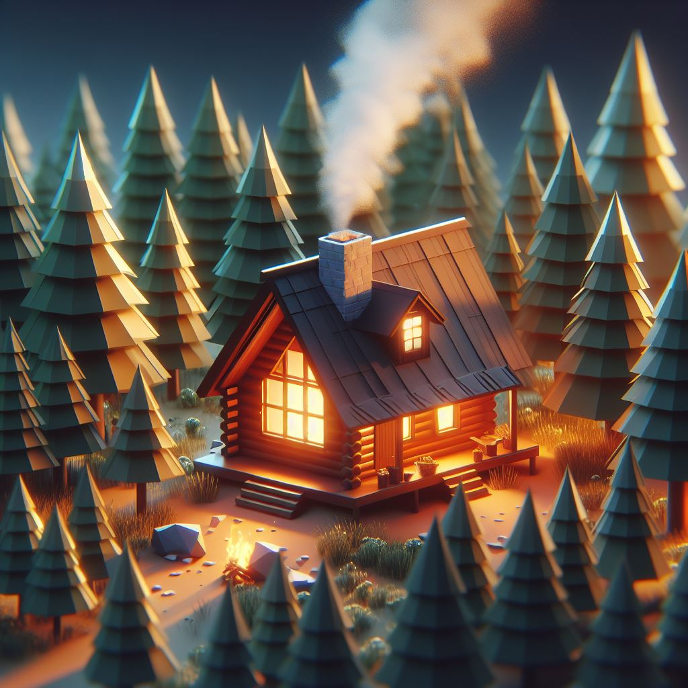
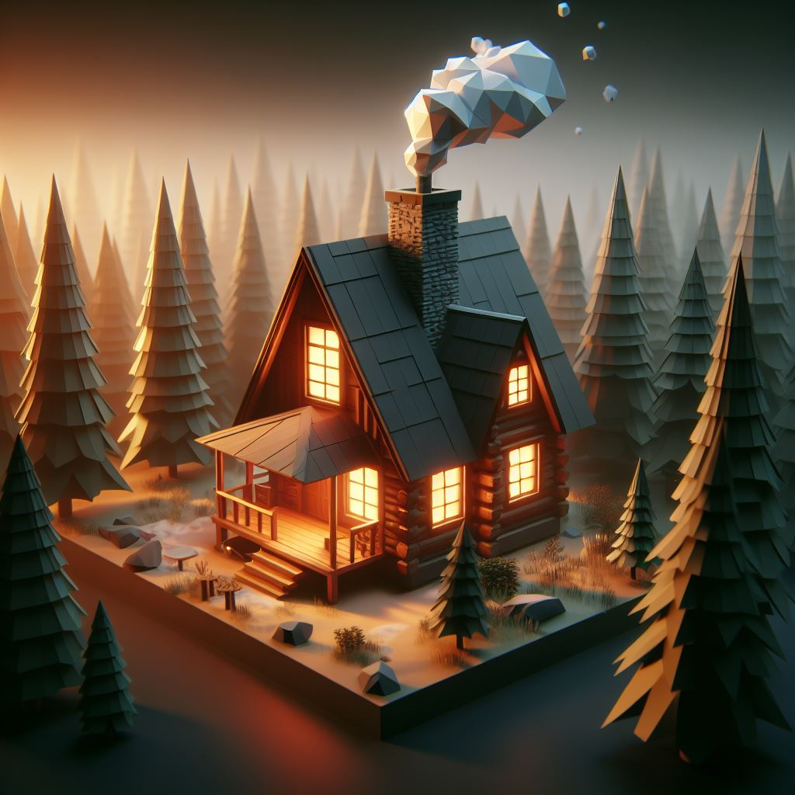
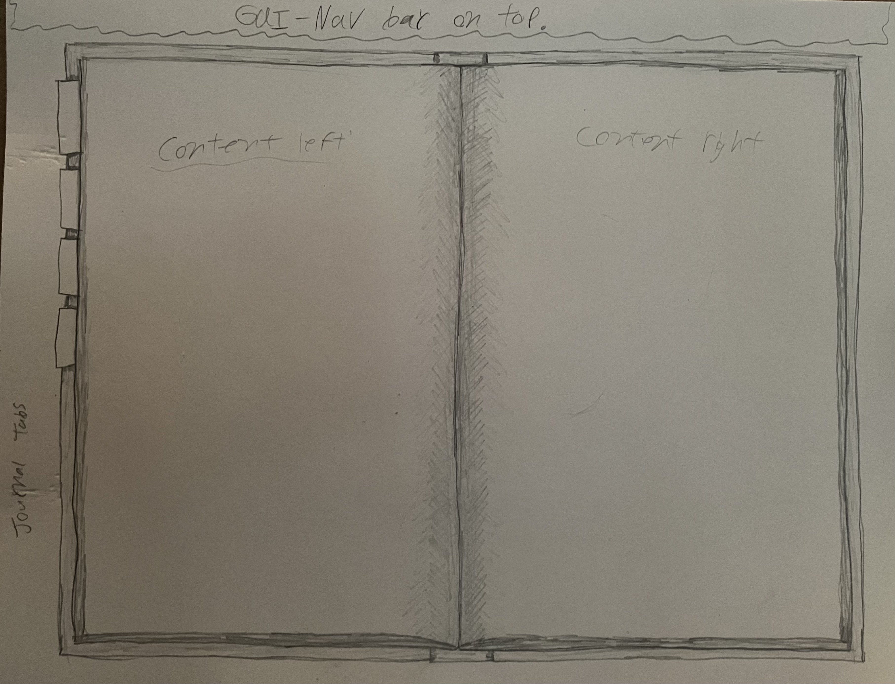
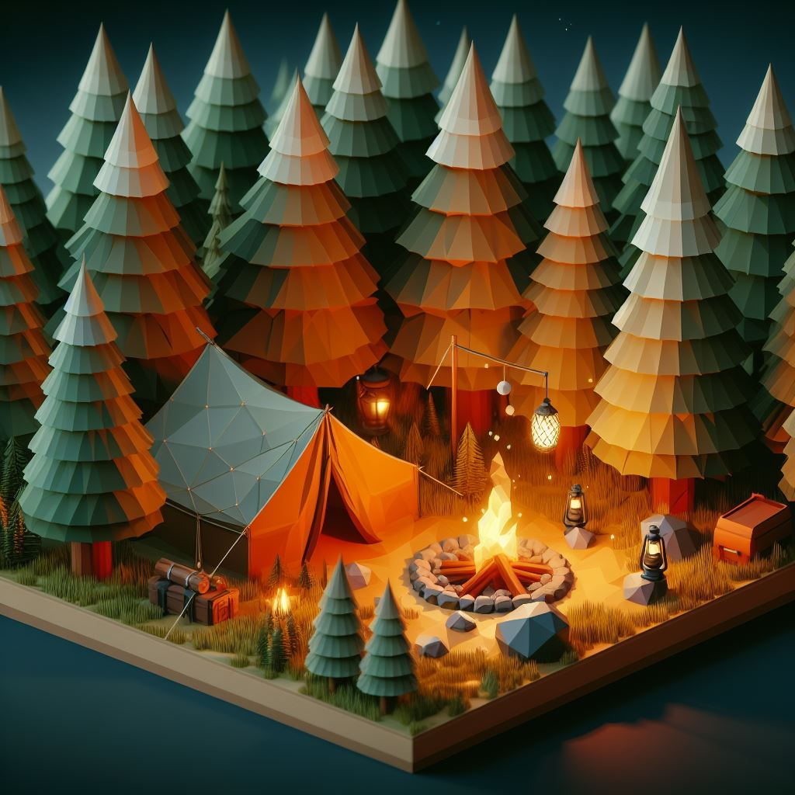
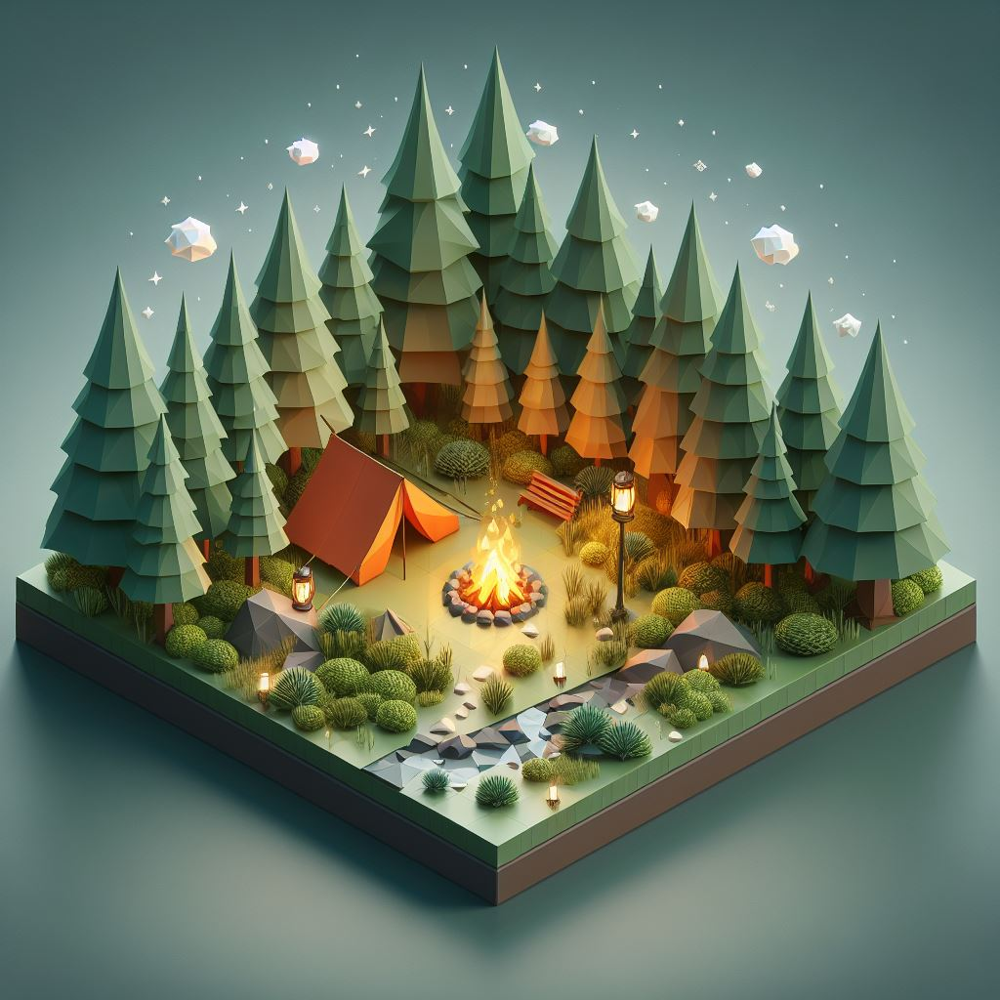
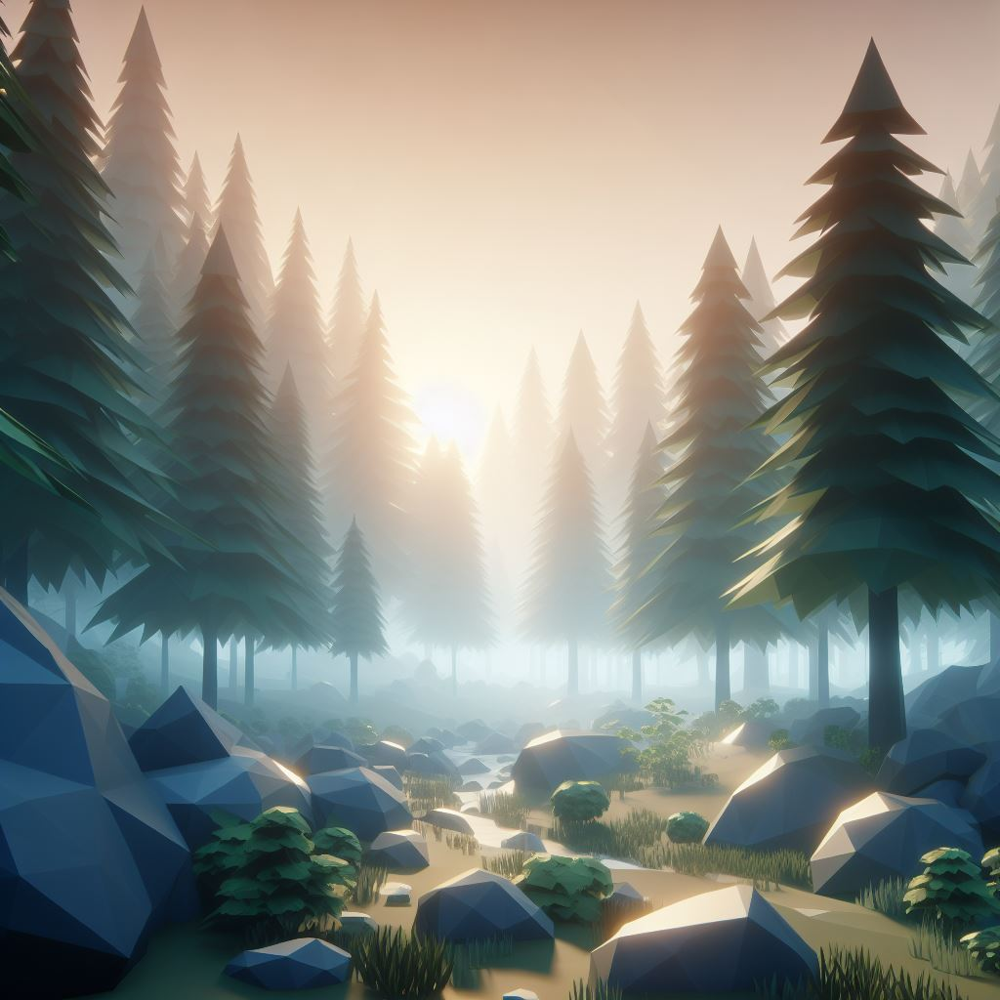
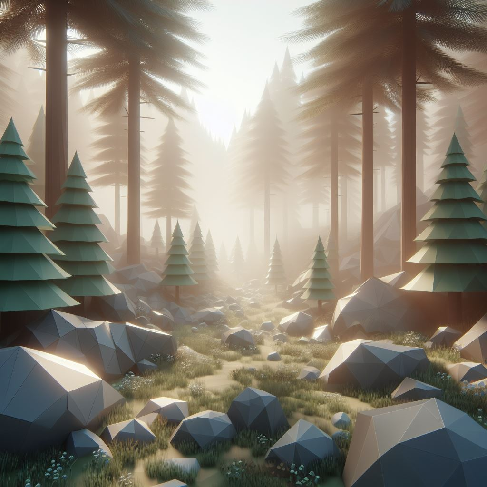

Design Principles I will apply.
What principles I will use:
- Good lore
- Responsive Controls
- Optomized for smooth running
- Modular code for trouble shooting and optomization
- Simple and clean GUI
- Challenges and minigames for added hook and loop
- Small world made large through content and personality
The goal is an immersive and fun experience all while being relaxed and go at your own pace.
I will be takng the slightly risky route of a purely story driven game. Which may end up bottle necking the player sometimes.
Consept Art: Cabin
 The Cabin is the home base / starter location for the player.
Consept Art: Journal_GUI
The journal acts as the quest, poi, and lore organizer for the player within the GUI.
Consept Art: Outposts
 Outposts act as a way station or rest stop while exploring. It could also be a POI (point of interest). Most will be small campsights, otheres small canvas overhangs, maybe a small shed with tools and such.
Consept Art: Mist
 The mist acts as a soft limit to player exploration functions much like a "fog of war" system. When walked into will provide resistance then rubberband the player back. Looks like a wall of black and white desaturated area then nothing but white fog. Untill you unlock the area beyond.
Consept Art: Dream wall

Dream wall is the hard limit to exploration, aka: the world border. It will be a slightly transparent shifting geometric pattern that has a bit of a ranbow glean to it. Like the 'mist' you can see through it, but much less so than the mist. there is a heavier fog behind which obscures your view. There will be a (stone henge or national park) looking camp sight that acts as the exit POI. Here there will be a dirt road with parking spot at the end, and a campsight. the exit cutsceene will shift views to a younger main character being last to the car and diving off into the distance... just before you wake, which is after child you / main character looks out the window... you will run into the 2nd games main character in a vision like cut scene. Lore wise the 2nd character you run into is in the same predicament you where in moments ago. There's a chance this will be an intro to multiplayer in the second game. Then you will wake up in hospital bed... fade out and fin